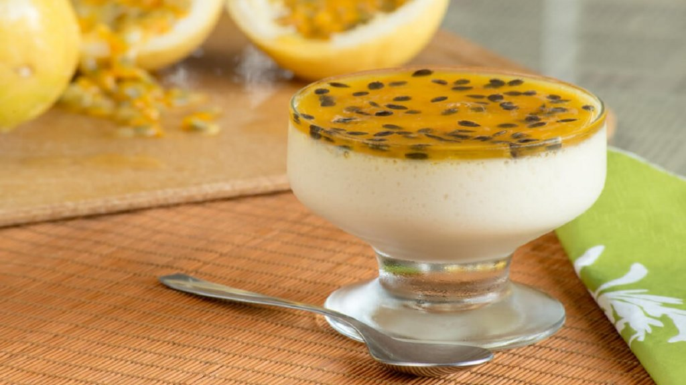

Baum, tu clicou na receita da mousse de maracuja
bora lá
Você vai precisar dos seguintes ingredientes:
- 1 xícara (chá) de suco de maracujá concentrado (200 ml)
- 1 lata de leite condensado
- 1 lata de creme de leite
- 1 envelope de gelatina em pó incolor (12 g) hidratada e derretida conforme instruções da embalagem
CALDA
- Polpa com sementes de 2 maracujás maduros
- 3 colheres (sopa) de açúcar
- 1/3 de xícara (chá) de água
Vamos para o passo-a-passo
- Bata o suco de maracujá com o leite condensado e o creme de leite no liquidificador até obter um creme aerado.
- Incorpore a gelatina derretida e bata por 1 a 2 minutos para misturar bem.
- Distribua em taças individuais e leve à geladeira por 4 a 6 horas ou até ficar consistente.
- Sirva regadas com a calda.
CALDA
- Leve os ingredientes ao fogo e ferva por 2 a 3 minutos. Utilize fria.
Volte para a página inicial aqui!